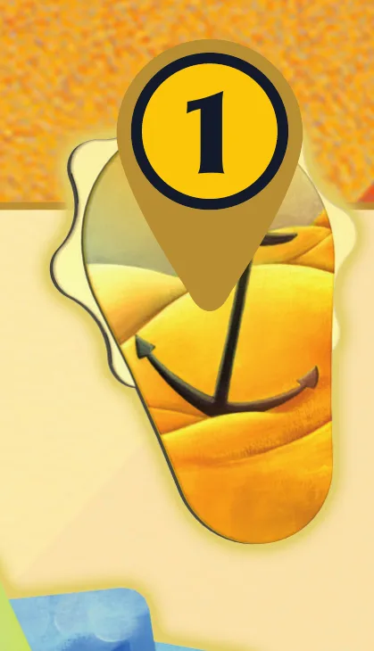
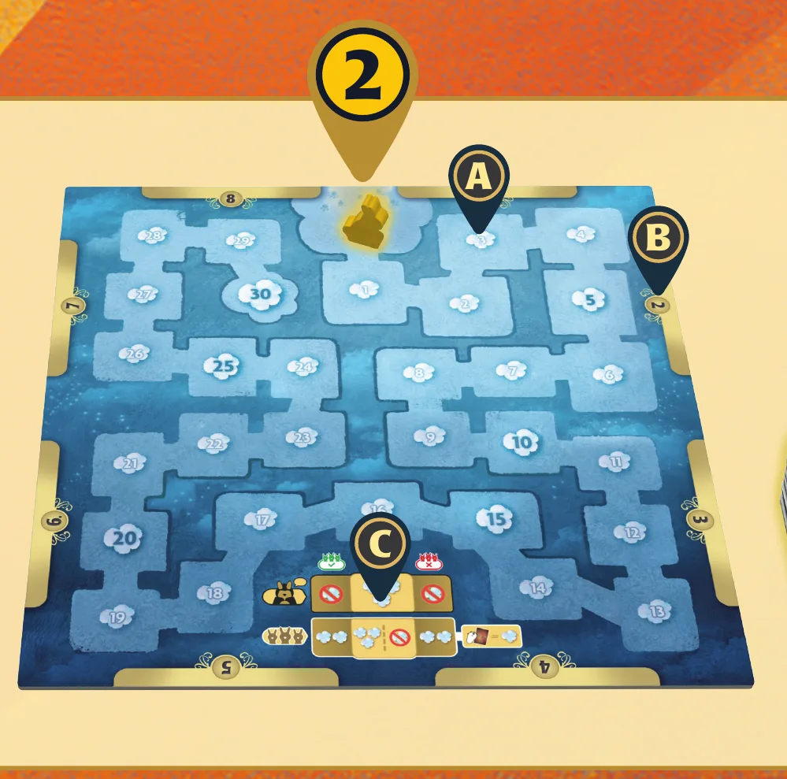
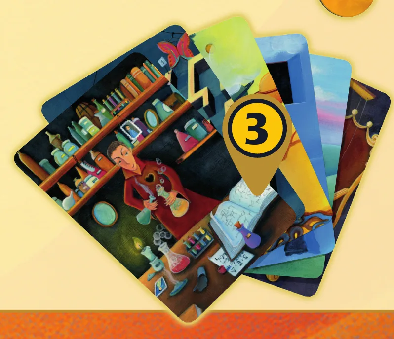
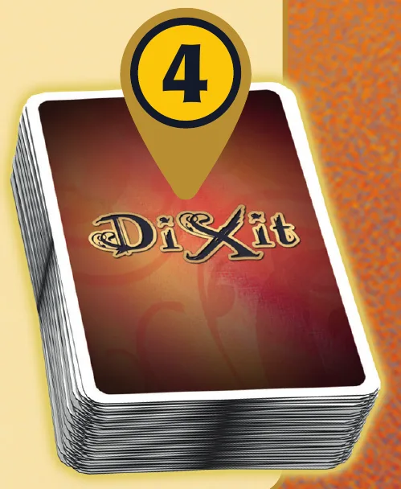
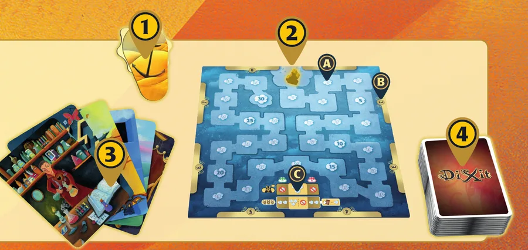
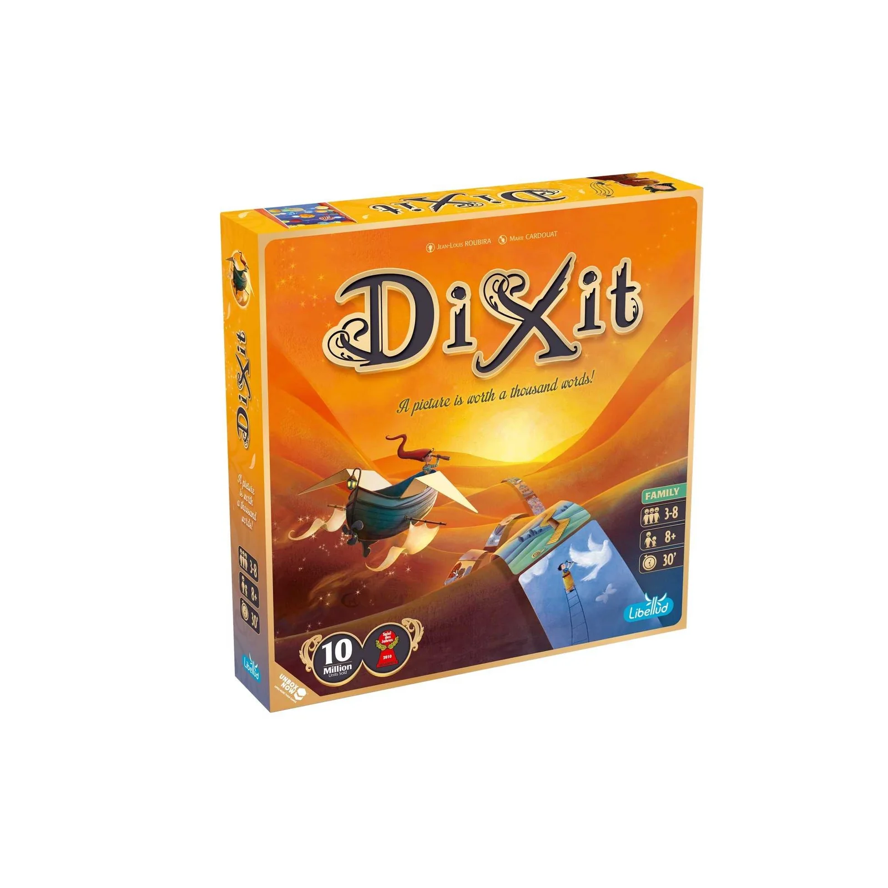
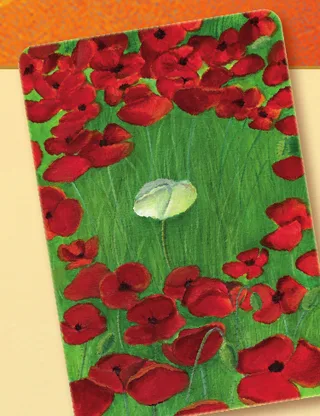
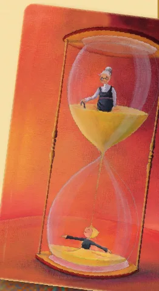
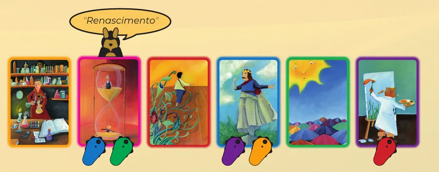

Imagem: Asmodee UK · edição do Reino UnidoDedução com imagens · Família
Como jogar Dixit
Para quem nunca jogou3 a 8 jogadores30 min8+Edição Asmodee (Galápagos)
· Redação Elite Boardgamers
Resumo em 1 minuto
A cada turno um narrador dá uma dica sobre uma carta secreta, os outros misturam cartas parecidas e votam, e vence quem tiver mais pontos quando alguém chegar a 30.
O narrador escolhe uma carta, diz uma dica, e cada jogador entrega a carta da mão que melhor combina com ela.
Se todos ou ninguém acharem a carta do narrador, ele fica com 0 e os outros ganham 2; se só alguns acharem, ele e quem acertou ganham 3.
Cada voto que a sua carta recebe vale 1 ponto de bônus, e a partida acaba no fim do turno em que alguém chega a 30.
Como você aprende: 3 etapas, da mesa montada à contagem de pontosLeitura do essencial: cerca de 5 min
À vista, só o essencial para jogar. O que abre com + é explicação, exemplo, exercício ou regra de caso especial: abra quando precisar.
Montar a mesa passo a passo
A montagem segue o quadro de preparação do manual, na p. 3, na mesma ordem: quatro passos, de 1 a 4. A lista de componentes está na p. 2.
Componentes da caixap. 2
Componente
Quantidade
Para que serve
Tabuleiro de jogo
1
Junta a trilha de pontuação (A), os 8 espaços de cartas (B) e a referência para os jogadores, o lembrete de como pontuar (C)
Cartas Dixit
84
As cartas ilustradas da mão e da votação
Discos de votação
8
Um por jogador; gira até mostrar o número da carta votada
Coelhos de madeira
8
Um por jogador; marca os pontos na trilha
Livreto de regras
1
Uma partida em andamento (não é a mesa no início): o tabuleiro, os coelhos na trilha, a pilha de compra, cartas e discos de votação. Imagem: Asmodee UK · edição do Reino Unido
Os passosp. 3
1. Cor de cada jogador. Cada jogador escolhe uma cor e pega o coelho e o disco de votação dessa cor: 1 coelho e 1 disco por pessoa p. 3.

Passo 1: o disco de votação, um por jogador, na cor escolhida. Ilustração: manual Asmodee p. 3
2. Coelhos na trilha. Cada jogador põe o seu coelho no início da trilha de pontuação do tabuleiro. O coelho mostra quantos pontos o jogador recebeu na partida inteira p. 3. Ponha o tabuleiro no meio da mesa (conselho do guia; o manual não diz onde), porque as cartas de cada turno vão para os espaços ao redor dele p. 2.

Passo 2: o coelho no início da trilha de pontuação; A é a trilha, B um dos espaços de cartas e C a referência para os jogadores. Ilustração: manual Asmodee p. 3
3. Mãos. Embaralhe as 84 cartas e dê 6 a cada jogador (7 com 3 jogadores), viradas para baixo p. 3. Cada um pega as suas e olha sem mostrar aos outros: o manual não escreve isso na preparação, mas o narrador escolhe a carta sem revelá-la e os outros entregam as suas sem mostrá-las p. 2, então é o conselho do guia.

Passo 3: a mão de 6 cartas de um jogador. Ilustração: manual Asmodee p. 3
4. Pilha de compra. As cartas que sobram formam a pilha de compra p. 3. Na ilustração do manual, ela fica com o verso para cima. Deixe espaço, longe do tabuleiro, para o descarte p. 2.

Passo 4: a pilha de compra, com o verso para cima. Ilustração: manual Asmodee p. 3

Os quatro passos juntos, como no quadro de preparação do manual. Ilustração: manual Asmodee p. 3
O que muda com o número de jogadores: 3 a 8 jogadores (página oficial da Libellud; o manual traz 8 discos, 8 coelhos e 8 espaços, p. 2, e regras para 3, p. 3; pilha contada só com o jogo base)
Jogadores
Cartas na mão
Cartas no tabuleiro por turno
Espaços usados
Pilha depois de dar as cartas
3
7
5 (cada não narrador entrega 2)
1 a 5
63
4
6
4
1 a 4
60
5
6
5
1 a 5
54
6
6
6
1 a 6
48
7
6
7
1 a 7
42
8
6
8
1 a 8
36
O que volta para a caixa. O manual não diz. Coelhos e discos das cores que ninguém escolheu não têm função na partida p. 2 e 3.
Quem começa. Depois da preparação, o primeiro jogador que pensar numa dica é o narrador do primeiro turno p. 2.
Antes de começar, confira: um coelho de cada jogador no início da trilha; um disco de votação na mão de cada jogador, da mesma cor do coelho; 6 cartas na mão de cada um (7 com 3 jogadores); o resto das cartas numa pilha de compra.
Partida de 5 jogadores, só com o jogo base. Quantas cartas ficam na pilha de compra depois da preparação?
5 jogadores com 6 cartas cada usam 30 das 84 cartas; sobram 54 p. 3.
Comece a jogar em 4 minutos

Imagem: Asmodee UK · edição do Reino Unido
Meta: em 4 minutos de leitura, montar a mesa e jogar o primeiro turno sem abrir o manual.
A ideia do jogo
A cada turno, um jogador é o narrador. Ele olha as cartas da mão, escolhe uma em segredo e diz em voz alta uma dica sobre ela: uma palavra, uma frase, um som. Os outros escolhem, cada um na própria mão, a carta que melhor combina com a dica e a entregam ao narrador, sem mostrar. As cartas são misturadas e expostas no tabuleiro, e todos, menos o narrador, votam na que acham ser a dele. O narrador quer que alguns acertem, mas não todos p. 2.
Monte a mesa
Resumo da seção "Montar a mesa passo a passo", acima. O tabuleiro tem a trilha de pontuação, onde o coelho anda um espaço por ponto, e 8 espaços de carta numerados; o disco de votação gira até o número da carta votada p. 2. Com 3 jogadores, veja as Situações especiais p. 3.
Cada jogador: coelho e disco da sua cor.
Coelhos no início da trilha.
6 cartas para cada um (7 com 3 jogadores), viradas para baixo.
O resto é a pilha de compra.
Seu primeiro turno
O primeiro narrador é quem primeiro pensar numa dica p. 2. O turno tem quatro momentos p. 2:
Criar o enigma. O narrador escolhe uma carta da mão, sem mostrar, e diz a dica. Cada outro jogador escolhe na mão a carta que melhor ilustra a dica e a entrega ao narrador, virada para baixo.
Expor as cartas. O narrador embaralha as cartas recebidas com a dele e as põe ao acaso, viradas para cima, nos espaços de carta, com os números à vista. Usam-se os espaços de 1 até o número de cartas do turno: com 6 jogadores, de 1 a 6, como no exemplo do manual p. 2.
Votar. Cada jogador, menos o narrador, gira o seu disco até o número da carta que acha ser do narrador, sem mostrar. Ninguém vota na própria carta. Todos revelam juntos e põem o disco sobre a carta votada.
Pontuar. O narrador mostra qual era a sua carta e conta os votos que ela recebeu. Cada um avança o coelho um espaço por ponto.
Votos na carta do narrador
Narrador
Quem acertou
Quem errou
Todos ou nenhum
0
2
2
Alguns, não todos
3
3
0
Bônus, nos dois casos
nenhum
+1 por voto na sua carta
+1 por voto na sua carta
O bônus: além disso, cada jogador que não é o narrador ganha 1 ponto por voto que a carta dele recebeu p. 2.
Ainda não precisa saber
O que fazer quando a pilha de compra acaba: etapa 3. A partida com 3 jogadores: Situações especiais.
Como a partida acaba: fim do turno e fim da partida
As cartas do turno vão para o descarte, cada um compra até ter 6 de novo e o jogador à esquerda do narrador vira o novo narrador p. 2. Se, no fim de um turno, alguém chegou a 30 pontos ou mais, a partida acaba ali, sem novo turno: vence quem tem mais pontos; empate divide a vitória p. 2.
Prefere ver? O vídeo é da Dixit: Disney Edition, cujo manual traz as mesmas regras de turno e de pontuação da caixa básica; muda o fim: na Disney, vencem todos os que chegaram a 30; na caixa básica, vence quem tem mais pontos. Ele complementa este guia; em caso de diferença, vale o manual.
DIXIT: Disney Edition - Regras + Gameplay comentada!, canal Duque Board Games · abrir no YouTube
0Antes de tudo: o que é este jogoOpcional
Imagem: Asmodee UK · edição do Reino UnidoAbrir esta seção
Dixit é um jogo de 84 cartas ilustradas e um tabuleiro, com 8 coelhos e 8 discos de votação, um por jogador, e regras próprias para 3 jogadores p. 2 e 3. O jogo inteiro gira em torno de dizer algo sobre uma imagem e adivinhar de qual imagem o outro está falando.
Há um único tipo de turno, que se repete com o narrador passando para o jogador à esquerda p. 2. Ganha pontos o narrador que acha a medida da dica, nem óbvia nem obscura demais; ganham pontos os outros quando acertam a carta do narrador e quando a carta que eles mesmos deram engana alguém p. 2. A partida termina no fim do turno em que alguém alcança 30 pontos p. 2.
O que se ensina aqui é pouco em regra e muito em julgamento. A regra cabe numa tabela de duas linhas; o julgamento (que dica dar, que carta entregar) vem com as partidas, e o guia separa os dois: regra no texto corrido, sugestão nos blocos de dica.
1Como este guia ensinaOpcional
Imagem: Asmodee UK · edição do Reino UnidoAbrir esta seção
São três etapas, na ordem do turno: montar a mesa e criar o enigma; votar e pontuar; fechar o turno e a partida. Cada etapa tem Para entender (o porquê), Passo a passo (a regra de sempre), regras adicionais em blocos à parte e tarefas com ajuda decrescente: exemplo resolvido, tarefa para completar e sua vez. Escolha uma opção em cada pergunta para ver a certa e a explicação. No fim, uma avaliação diz o que reler, e a folha de consulta vai para a mesa.
2Etapa 1: montar a mesa e criar o enigma
Por que funciona assimA preparação: coelho e disco de cada jogador (1), coelhos no início da trilha (2), 6 cartas na mão (3) e a pilha de compra (4); no tabuleiro, a trilha (A), os espaços de cartas (B) e a referência (C). Ilustração: manual Asmodee p. 3Regra adicional: Com 3 jogadoresPor que funciona assimRegra adicional: O que vale como dicaRegra adicional: Quem narra primeiro

Exemplo 1 do manual: com esta carta, o narrador diz "É MEU aniversário!", pela ideia de alguém sob um feixe de luz que chama toda a atenção. Ilustração: manual Asmodee p. 3

Exemplo 2 do manual: com esta carta, o narrador diz "Renascimento", pela vida que passa de geração a geração. Ilustração: manual Asmodee p. 3Dica: Sugestão para o narradorVer um exemplo resolvidoPratique esta etapa: exercícios com respostas
3Etapa 2: votar e pontuar
Por que funciona assim

O exemplo de pontuação do manual, com 6 jogadores e a dica "Renascimento": o Rosa narra; os discos azul e verde estão na carta dele, os discos violeta e amarelo na carta do Azul, e o vermelho na carta do Violeta. Ilustração: manual Asmodee p. 3Ver um exemplo resolvidoVer um exemplo resolvidoRegra adicional: O narrador não ganha bônusDica: Sugestão para quem não narraPratique esta etapa: exercícios com respostas
4Etapa 3: fechar o turno e a partida
Imagem: Asmodee UK · edição do Reino UnidoPor que funciona assimRegra adicional: A pilha de compra acabouSobre a edição: Outra redação em outras ediçõesVer um exemplo resolvidoPratique esta etapa: exercícios com respostas
5Situações especiaisOpcional
Imagem: Asmodee UK · edição do Reino UnidoAbrir esta seção
Partida com 3 jogadoresp. 3. As outras regras não mudam.
Todos completam a mão com 7 cartas em vez de 6.
Para criar o enigma, cada jogador que não é o narrador escolhe 2 cartas em vez de 1. Assim, ficam 5 cartas no tabuleiro, incluindo a do narrador.
No fim do turno, esses dois jogadores compram 2 cartas cada um, em vez de 1.
Na pontuação, cada um deles ainda marca 1 ponto de bônus se recebeu um voto numa das suas cartas, não importa em qual.
Ver um exemplo resolvidoSobre a edição: A compra do narrador com 3 jogadoresRegra adicional: Você não pode votar em nenhuma das suas duas cartasSobre a edição: Edições antigasSobre a edição: Dois jogadoresRegra adicional: Expansões
6Avaliação finalOpcional
Imagem: Asmodee UK · edição do Reino UnidoAbrir esta seção
Responda sem consultar. Cada resposta diz o que reler.
1. Na preparação, quantas cartas cada jogador recebe numa partida de 5?
6 cartas; só com 3 jogadores são 7 p. 3. Releia a etapa 1.
2. O narrador também vota com o disco?
Cada jogador, exceto o narrador, vota p. 2. Releia a etapa 2.
3. Oito jogadores. Cinco dos sete que votam acertam a carta do narrador. Quanto o narrador faz?
Alguns, não todos, acertaram: 3 para o narrador, sem bônus p. 2. Releia a etapa 2.
4. Todos acertaram a carta do narrador. Quanto faz cada um dos outros?
Todos ou nenhum: 2 para cada um dos outros e 0 para o narrador p. 2. Releia a etapa 2.
5. Você errou a carta do narrador, mas a sua carta recebeu 2 votos, e alguns acertaram. Quanto você faz?
Quem errou não pontua pela adivinhação, mas recebe 1 por voto na própria carta p. 2. Releia a etapa 2.
6. Quem é o narrador do turno seguinte?
Só o primeiro narrador é quem pensa primeiro numa dica; depois, a vez passa para a esquerda p. 2. Releia a etapa 3.
7. No fim do turno, Ana tem 31 e Bruno, 33. O que acontece?
Alguém alcançou 30 no fim do turno, e vence quem tem mais pontos p. 2. Releia a etapa 3.
7Para consultar durante a partida
Imagem: Asmodee UK · edição do Reino Unido
Preparação: coelho e disco da sua cor; coelhos no início da trilha; 6 cartas para cada um (7 com 3 jogadores); o resto é a pilha de compra.
O turno
Narrador escolhe uma carta, sem mostrar, e diz a dica (palavra, frase, canto, mímica, som).
Cada outro jogador entrega, virada para baixo, a carta da mão que melhor ilustra a dica (2 cartas, com 3 jogadores).
Narrador embaralha tudo e expõe nos espaços numerados.
Todos, menos o narrador, votam em segredo com o disco; ninguém vota na própria carta; revelação ao mesmo tempo.
Narrador revela a carta dele. Pontuação.
Cartas para o descarte; cada um compra até 6 (7 com 3); narrador passa para a esquerda.
Votos na carta do narrador
Narrador
Quem acertou
Quem errou
Todos ou nenhum
0
2
2
Alguns, não todos
3
3
0
Bônus
nenhum
+1 por voto na sua carta
+1 por voto na sua carta
Pilha acabou: embaralhe o descarte para formar a nova pilha de compra.
Fim: no fim do turno em que alguém tem 30 ou mais. Vence quem tem mais; empate divide a vitória.
8Fontes
Imagem: Asmodee UK · edição do Reino Unido
Asmodee. Dixit: livro de regras (edição brasileira, código DIX601, "v1.0", 4 páginas, PDF criado em 23/02/2026 e modificado em 09/06/2026; tradução de Paula Pizauro, revisão de Camila Berka e Evelyn Trippo; créditos de 2021 da Libellud). Biblioteca de downloads da Asmodee Brasil, https://www.asmodee.com.br/download-library. Consultado em 04/11/2026.
Asmodee. Dixit: Disney Edition: livro de regras (edição brasileira, DIX631, v1.0) e Dixit: livro de regras (edição brasileira de 2021, DIX301, v2.0) e manual de 2015 da Galápagos, para as diferenças entre edições. Mesma biblioteca de downloads, consultada em 04/11/2026.
Regras conferidas no livro de regras da edição brasileira atual de Dixit (Asmodee, código DIX601, versão 1.0, 2026, tradução de Paula Pizauro), baixado da biblioteca de downloads da Asmodee Brasil. O manual não tem número impresso nas páginas: o guia conta a capa como p. 1, e as regras ficam nas p. 2 e 3.